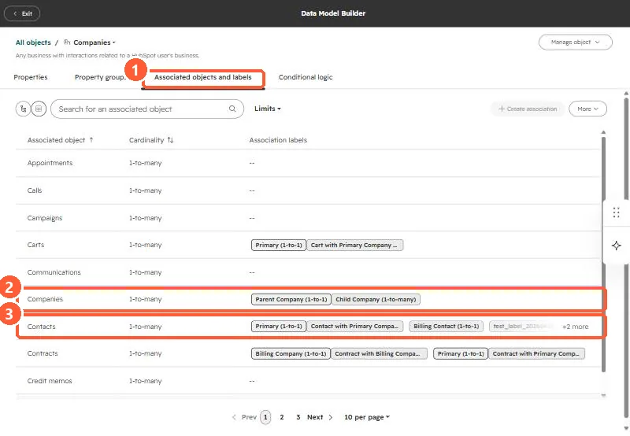
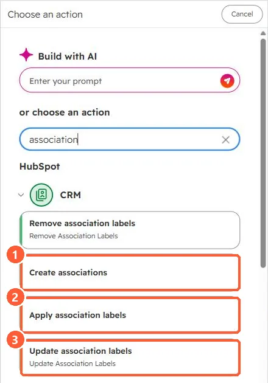

Short answer
On a client project, assignee labels were copied from the first-created associated company to the related contacts and deals. The client's own review found records with missing labels or labels on the wrong record, and the cause was contacts and deals associated with more than one company. Before copying anything from a company, decide which company is the source (the Primary label is the usual choice), find records with more than one company, and correct them with the association label workflow actions.
1. What happened
The client tracked an assignee on companies with association labels and wanted the same label on each related contact and deal. The automation took labels from the first company created. During review, the client found contacts and deals where the label was missing, on the wrong record, or on both. The records with errors were the ones associated with several companies.
2. See the labels you are copying
In my demo portal, the data model lists company associations and their labels. Companies to companies has Parent and Child labels; contacts to companies has Primary plus custom labels.


3. Fix with the label actions
Workflows have actions to create associations and to apply, update or remove labels. HubSpot's KB says the update action can replace an existing label or append a new one.


- Pick the source company by label, such as Primary, not by create date.
- Find the contacts and deals that have more than one associated company before running anything, and review those by hand.
- Through the API, labels have their own type IDs. See association labels in the v4 API and association labels.